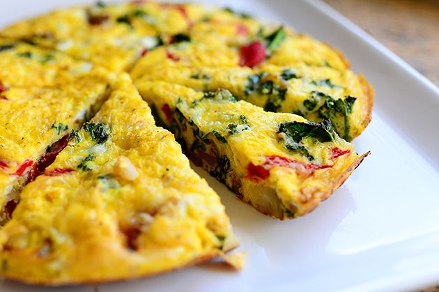

Frittata- Fancy Leftovers
a frittata is more of a method than a recipe. sauteed veggies meet cheese and creamy eggs for the perfect breakfast casserole
wonderful to serve a crowd if you've got friends over for brunch

Tools
- mixing bowl
- whisk
- casserole dish (13x9in for this recipe, for other sizes adjust cooking time)
- oven
Ingredients
Egg Mixture
- 8 eggs
- 2 tbsp milk or cream
- 1-2 tsp salt
Fillings
frittata fillings can be pretty much anything you can think of (or that you need to use up from your fridge)
some of my favorite combinations:
- 1 red potato cut in 1-in chunks and steamed in the microwave+wilted kale or spinach+smoked sausage
- sauteed onions and bell pepper+sauteed chunks of ham+cheddar cheese
- sauteed onions and cherry tomatoes+microwave steamed asparagus+soft goat cheese
- thawed frozen broccoli+cheddar cheese
- caramelized onions+sweet potato or butternut squash chunks+diced bacon
Directions
- Prepare casserole dish- spray with cooking spray or grease with butter
- Prepare fillings- chop what needs chopping, saute what needs sauteeing. to save time, I tend to dump my fillings (except cheese) straight into the casserole dish when finished.
- Preheat oven to 425 degrees farenheit
- Crack eggs into mixing bowl, add salt and let sit for about 10 minutes
- Add milk to eggs and whisk vigorously until fluffy
- Pour egg mixture into casserole dish over fillings. If using cheese, add about half and mix gently
- Sprinkle top with the rest of the cheese, add generous amount of black pepper
- Bake between 14-18 minutes- start checking at 14 if eggs reach desired consistency. Frittatas with more soft/liquidy ingredients (goat cheese, caramelized onions, tomatoes) will stay softer
- Let frittata cool and set for about 5 minutes, then slice to serve warm
makes about 6 servings